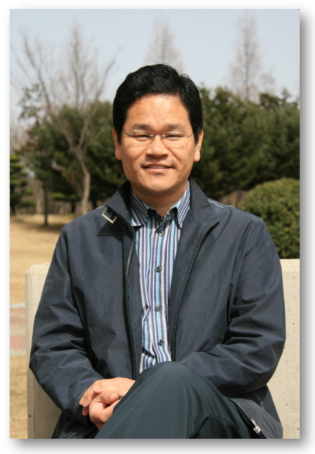

“자생력 있는 성도, 생동케 하는 공동체”
오치애양교회는 '교회다운 교회'가 되기를 원합니다.
교회만이 할 수 있는 일들, 교회가 마땅히 해야 할 일들, 교회가 가장 잘 할 수 있는 일들에 늘 점검해서 하나님께서 이 땅에 교회를 세우신 이유를 생각하고, 그 이유를 이루어가는 교회가 될 수 있기를 원합니다.
그런 교회를 꿈꾸며 우리는 "자생력 있는 성도, 생동케 하는 공동체"를 이루는 데 집중합니다. 늘 성경 말씀을 가까이 해서 말씀주도적인 삶(Word-driven Life)을 살아 성도 개개인이 영적 자생력을 갖추고자 합니다. 영적 자생력을 갖춘 성도들이 모인 교회는 경건의 능력이 드러나는 공동체가 되어, 성도들이 관여된 모든 곳을 생동하게 할 것입니다.
그저 성경을 아는 데 그치지 않고, 알고 있는 말씀에 순종하며 가치관을 성경적으로 조정해가는 성도! 그저 기도하며 영적 카타르시스를 느끼는 데 그치지 않고, 살아 계신 하나님을 만나고, 하나님의 능력을 경험하며, 하나님의 목적에 헌신하는 성도! 그런 성도들과 함께 오치애양교회에서 영적 자생력을 배양해 보시지 않겠습니까? 또 그런 성도들과 함께 생동하는 공동체를 이루어서 우리가 관계된 모든 곳이 생동감 넘치게 하는 그런 교회를 함께 해보시지 않겠습니까?
당신을 초청합니다!
담임목사 한승진